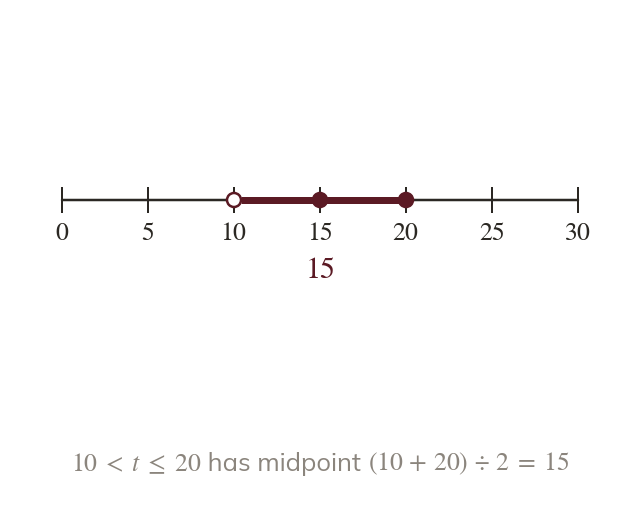
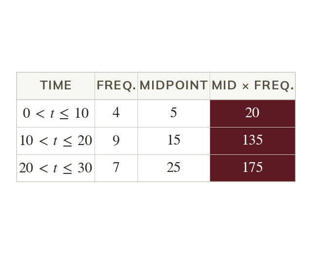
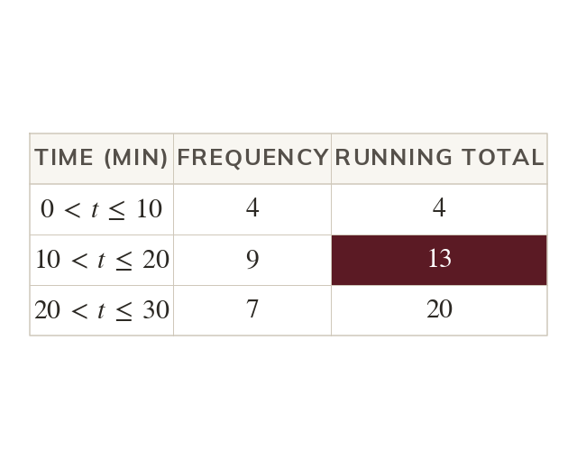
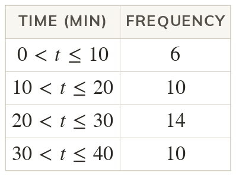
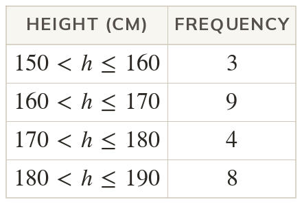
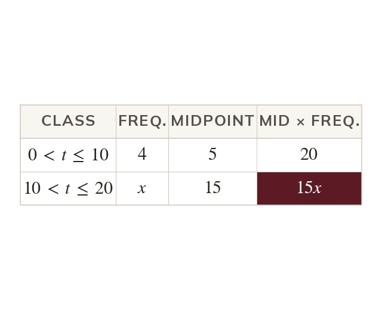
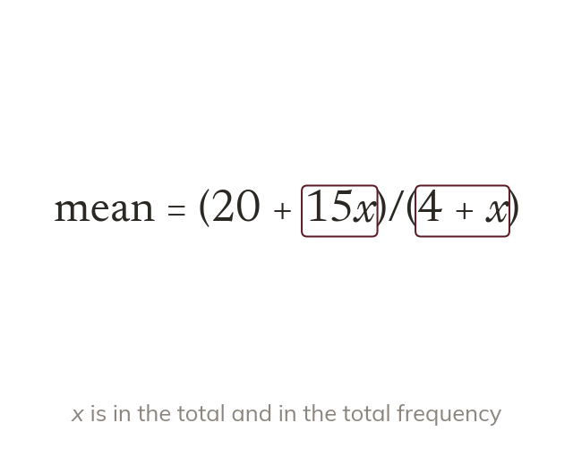
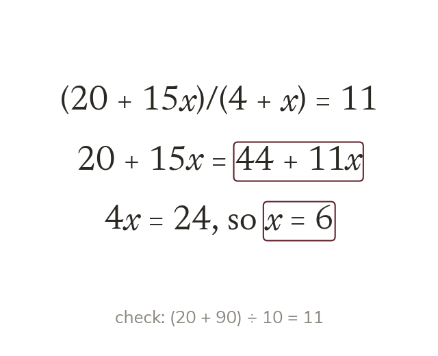
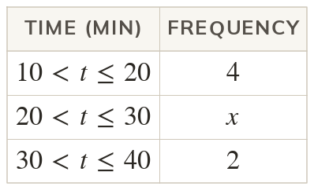
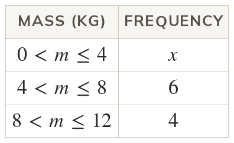

Midpoints stand in for the values
The exact values in a class are lost. The class midpoint stands in for every value in it.
A table of grouped times hides every exact value. The class midpoints still give a good estimate of the mean, and counting through the frequencies still finds the middle class.
Work down the page at your own pace. Write every answer in your book first, then click to check it.
Read each card, then follow the worked examples one step at a time.

The exact values in a class are lost. The class midpoint stands in for every value in it.

The estimated mean is the total of midpoint × frequency over the total frequency. It is an estimate, because the true values are unknown.

The median class holds the value. The modal class has the highest frequency, and both are named as classes.


Pick an answer. If it's wrong, the feedback tells you which mistake it was.
Read each card, then follow the worked examples one step at a time.

A missing frequency still multiplies its midpoint. So that class adds to the total.

The unknown frequency joins the total frequency too. So the top and the bottom of the mean both contain x.

Multiplying by the total frequency removes the fraction. The equation is then linear in x.


Pick an answer. If it's wrong, the feedback tells you which mistake it was.
Finished? Next lesson: 10H.16.2 Quartiles and the Interquartile Range.
Log in, then search for a code to practise that skill.
Videos, worksheets and more on each part of this lesson.